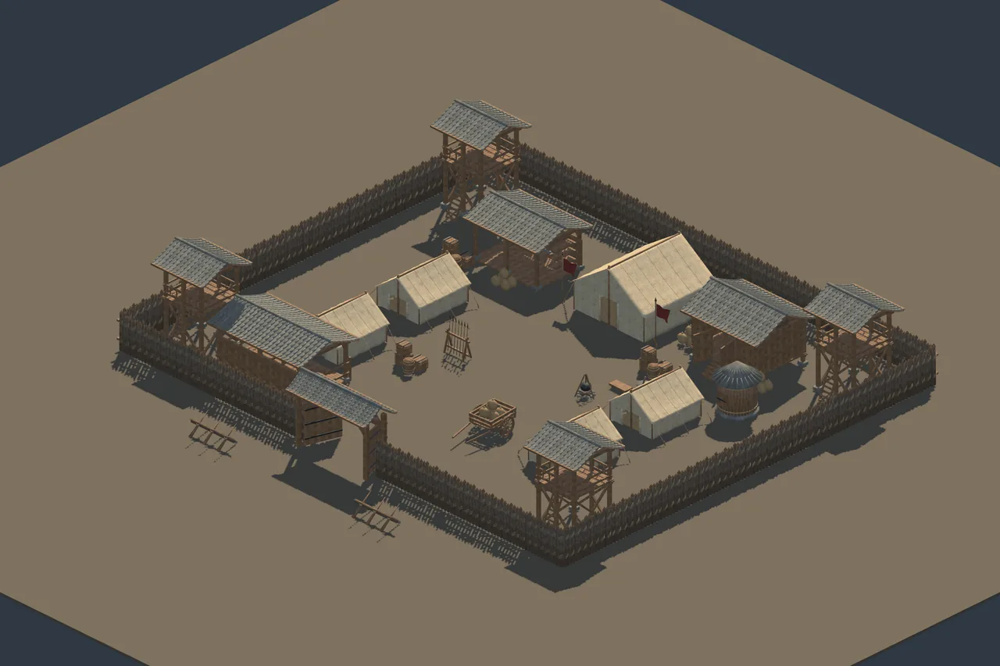
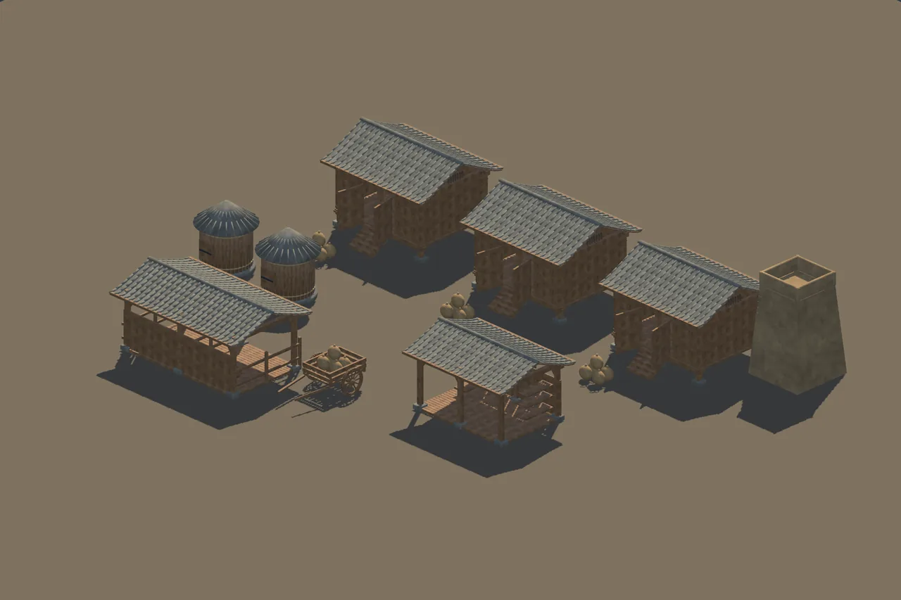
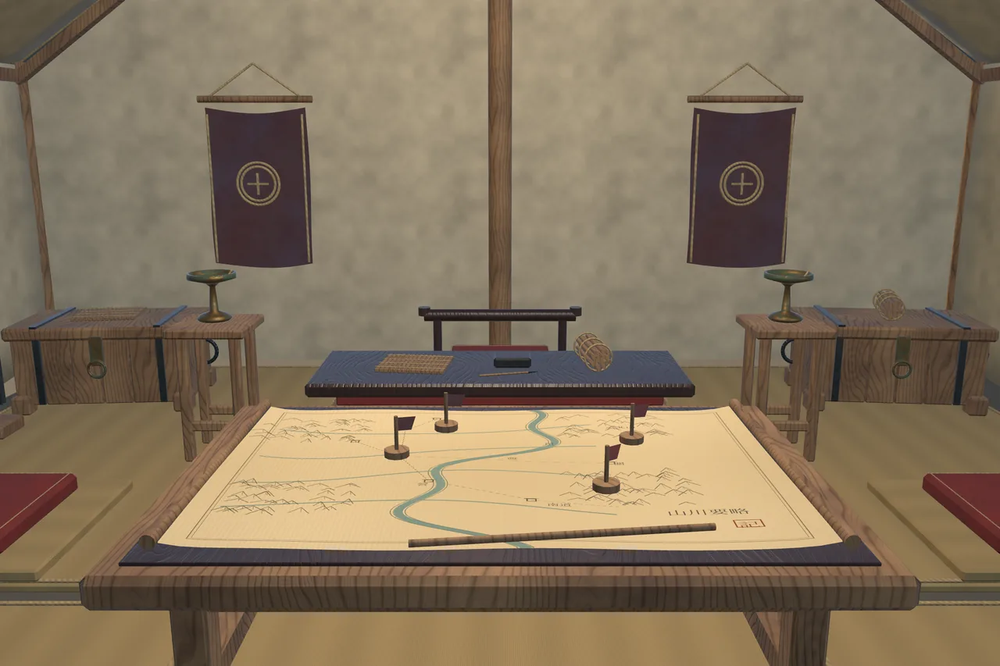

Han Military Camp
The world behind the front line.

The world behind the front line.
Palisades, tents, granaries and supply props build a military camp around its working life, with a furnished command interior.
60 semantic modules
3 exterior layouts
Detail & LP variants
Local technical candidate · Not listed on the Asset StoreA closer look
Select an image to explore




Inside the project
Fortified logistics camp, marching camp and grain transfer depot layouts. Includes 27 exterior and 33 interior modules, low-detail replacements, gate pivots, static cart and a reusable command interior.
Tested configuration
Unity 6000.6.0f1
Universal Render Pipeline 17.6.0
Windows · Direct3D 11 · Linear
Other Unity versions, render pipelines and platforms have not been verified. No target frame rate is promised.
Scope & limitations
No characters, animals, fire effects, vehicle driving, production door animation, NavMesh or gameplay. Ladders have no climbing controller. Low tents and furnished routes require character-specific clearance checks; colliders are static.